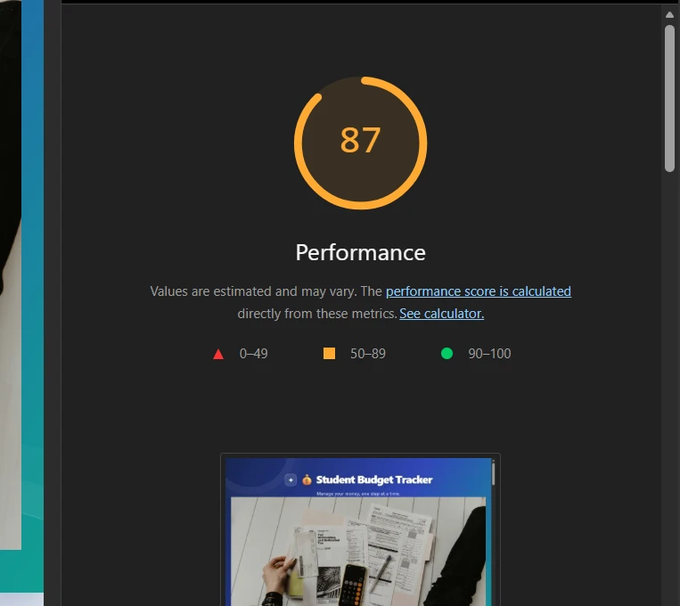
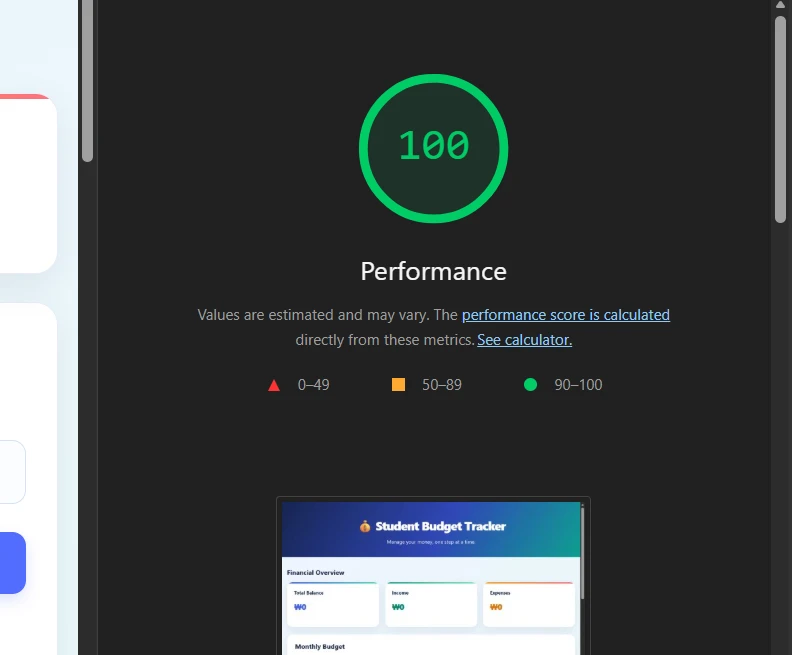
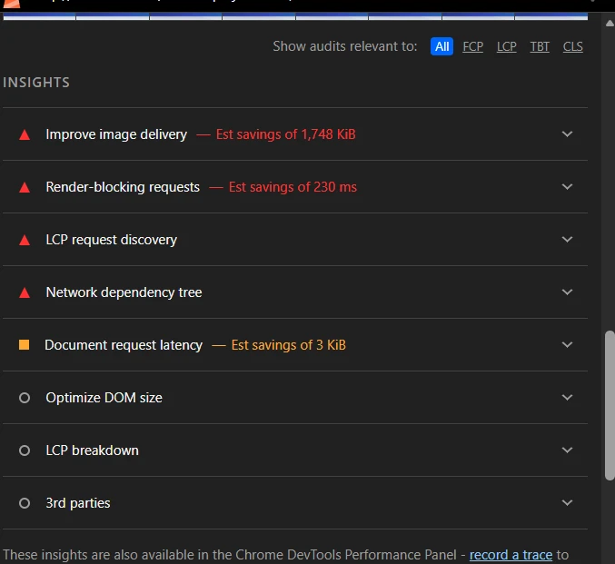

Student: Aayush Pandey · Student ID: 202537201
Project: Student Budget Tracker · Web Programming
1. Introduction
This report documents a Lighthouse performance review of the Student Budget Tracker. The work includes an official deployed-site run, a temporary local test, review of the opportunities shown by Lighthouse, and a summary of optimization techniques relevant to the project.
Course archive: GitHub repository
Group project: Student Budget Tracker proposal
2. Before-and-After Lighthouse Performance Scores
The supplied before screenshot shows 87/100 and the supplied after screenshot shows 100/100, a 13-point difference in the provided captures. Lighthouse results can vary with device, browser, network, cache and test conditions, so repeat both runs under the same conditions when collecting final evidence.
Screenshot 1 · Before optimization
Local Lighthouse audit · 87/100

Screenshot 3 · After optimization
After optimization · supplied audit · 100/100

3. Lighthouse Findings and Improvement Opportunities
The opportunities capture records the recommendations reviewed during the optimization exercise.
Screenshot 2 · Lighthouse opportunities
Image delivery and rendering recommendations

Findings visible in the Lighthouse report
Improve image delivery
The report estimated potential savings of 1,748 KiB. Compressing images and selecting suitable formats can reduce transfer size.
Render-blocking requests
The report estimated 230 ms of possible savings. Review scripts and styles that delay the first render.
LCP request discovery and network dependency
Review how quickly the main content image is discovered and whether dependent requests delay it.
Document request latency
The report estimated 3 KiB in possible savings for this item. Review response size and loading behavior.
4. Optimization Techniques Reviewed
1. Defer non-critical JavaScript
Use the defer attribute for scripts that can wait until HTML parsing has finished.
2. Reduce repeated calculations
Where transaction totals and filtered lists use the same data, calculate related values in one pass when it improves clarity and efficiency.
3. Batch DOM updates
Build multiple transaction elements in a DocumentFragment and append them together rather than repeatedly updating the live document.
4. Remove unused resources
Review third-party libraries and large media files that are not needed by the page.
5. Simplify expensive visual effects
Limit unnecessary blur effects and continuous animations, especially on large page regions.
5. Result and Reflection
The supplied before-and-after captures show a change from 87 to 100. The improvement is encouraging, but Lighthouse scores are lab measurements and can fluctuate. The most useful learning came from reviewing image delivery, render-blocking requests, LCP discovery, JavaScript loading, and DOM updates rather than relying on the score alone.
Evidence distinction: The 87 result is the supplied before-optimization local check; the supplied after-optimization capture shows 100. Repeat both runs on the same URL and under comparable conditions for a strict comparison.